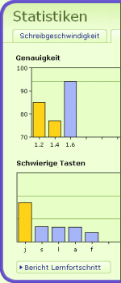

Um sich alle Ergebnisse anzuschauen, klicken Sie auf 'Statistiken' im Menü rechts.
Sie sehen Grafiken, die die Entwicklung der Brutto- und der Nettogeschwindigkeit sowie der Genauigkeit darstellen. Darüberhinaus sind die schwierigen Tasten dargestellt. Um noch detailliertere Daten zu erhalten, klicken Sie auf 'Bericht Lernfortschritt'.
Diesen Bericht können Sie sich auch ausdrucken oder ihn als PDF-Dokument speichern.